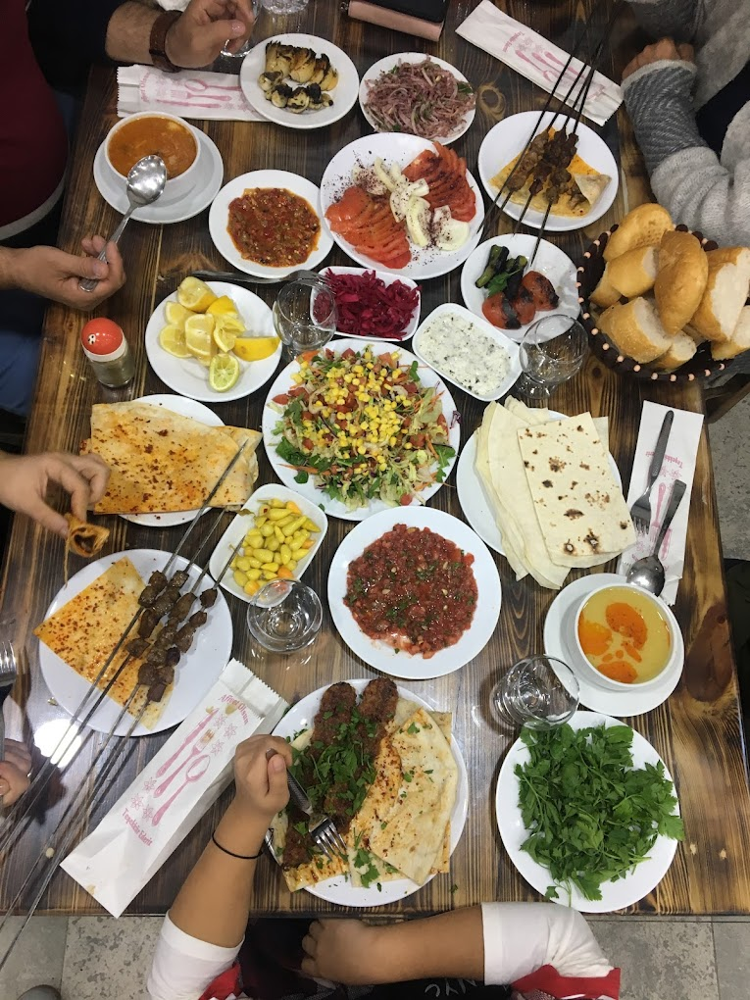
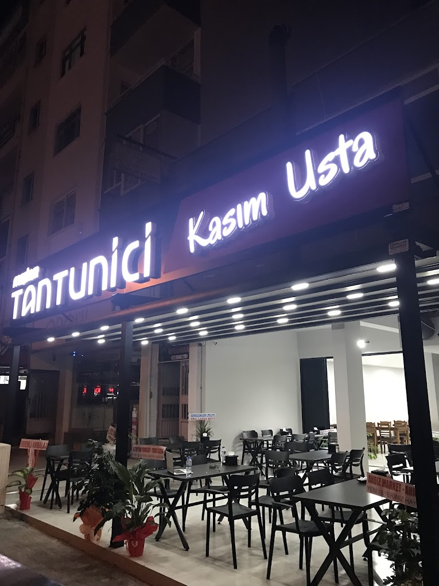
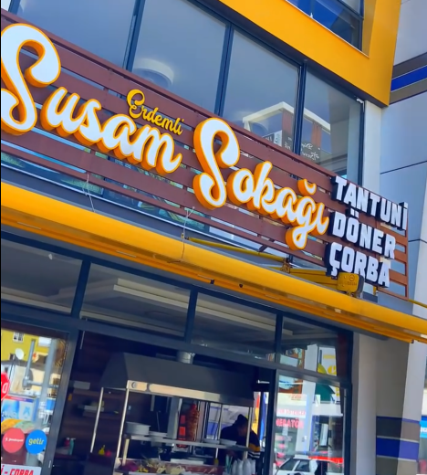
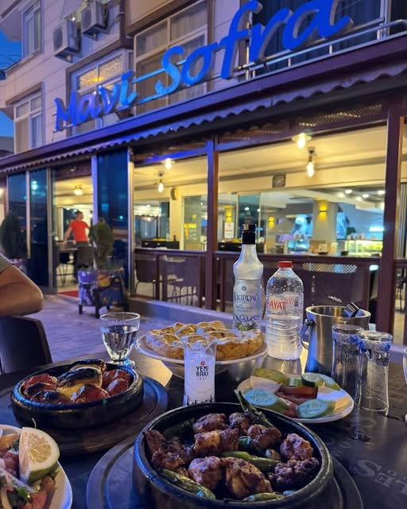
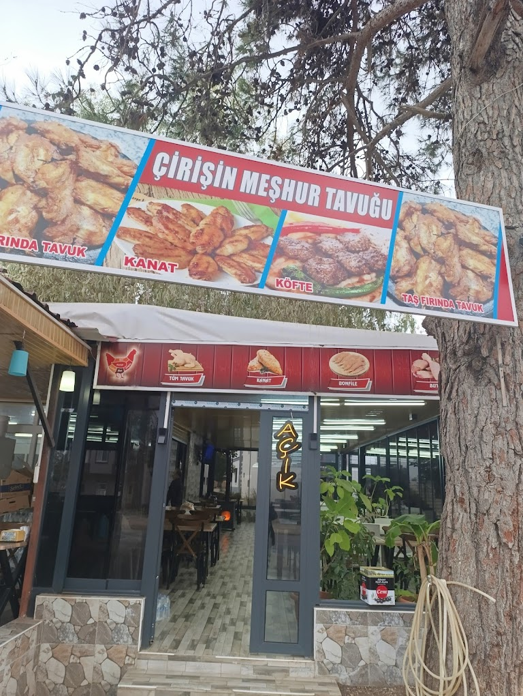
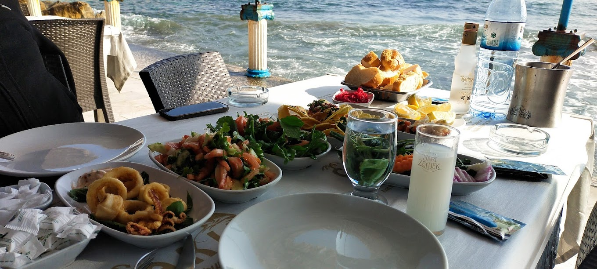
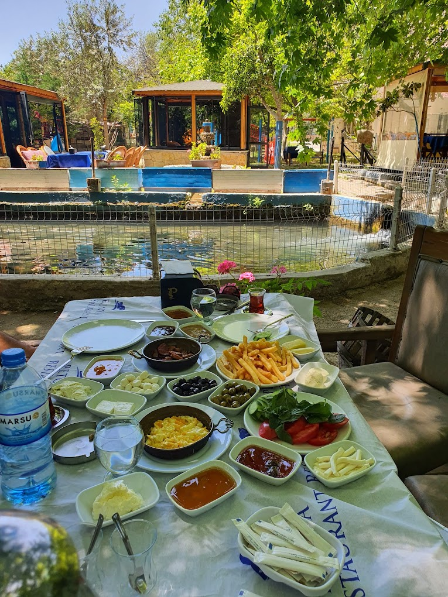
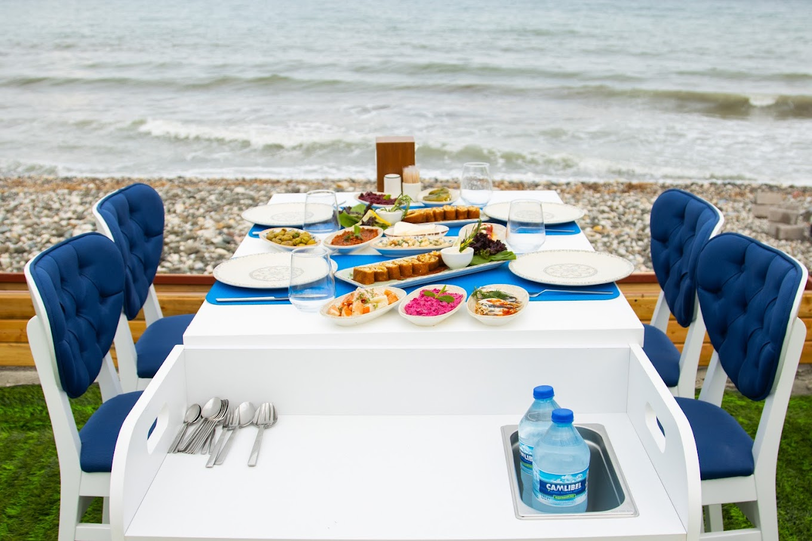

Önerilerimiz
Restoran Tavsiyelerimiz
Mersin'deki otel misafirlerimiz için en iyi restoranları ve lezzet duraklarını derledik. Yerel mutfak, deniz ürünleri ve ev yemekleriyle unutulmaz bir yemek deneyimi sizi bekliyor.

Ciğerci Ramazan
Meşhur ciğer ve kebap çeşitleri.
Akdeniz, Alparslan Türkeş Blv. No:148 D:c, Erdemli/Mersin

Tantunici Kasım Usta
Mersin tantunisi ve hızlı servis.
Merkez, Alparslan Türkeş Blv. 236B, Erdemli/Mersin

Susam Sokağı Ev Yemekleri
Ev yemekleri, sıcak ve samimi atmosfer.
Merkez, Hal Cd. No:14, Erdemli/Mersin

Mavi Sofra Aile Restaurant
Aile ortamı ve zengin menü seçenekleri.
Merkez, Erdemoğlu Blv. No:139, Erdemli/Mersin

Çiriş Tavukçuluk
Tavuk çeşitleri ve yöresel tatlar.
Çiriş Mah. 143/A, Erdemli/Mersin

Çakıl Balık Restaurant
Taze balık ve deniz ürünleri.
Ayaş, Atatürk Cd., Erdemli/Mersin

Petunya Restaurant
Doğayla iç içe huzurlu bir yemek alanı.
Hacıhalilarpaç, Elvanlı Köyü Yolu, Erdemli/Mersin

Çeşmeli Ülfet
Sahil kenarında deniz manzaralı restoran.
Çeşmeli, Sahil Cd. No:12/2, Erdemli/Mersin